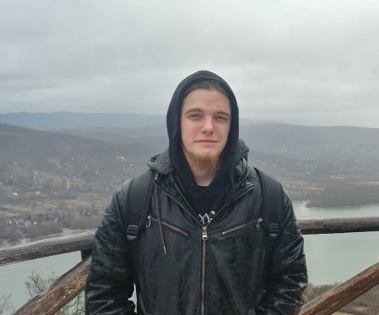

|  | BemutatkozásÜdvözöllek a weboldalamon! Az én nevem Sajgó Levente, és a Budapesti Műszaki és Gazdaságtudományi Egyetem Gépészmérnök Bsc-s hallgatója vagyok. Miskolcon születtem, ám 13 év után Győrbe költöztünk, ahol Gépgyártás Technológiai Technikusként végeztem, és itt döntöttem el hogy a BME gépészmérnöki karára jelentkezek. |